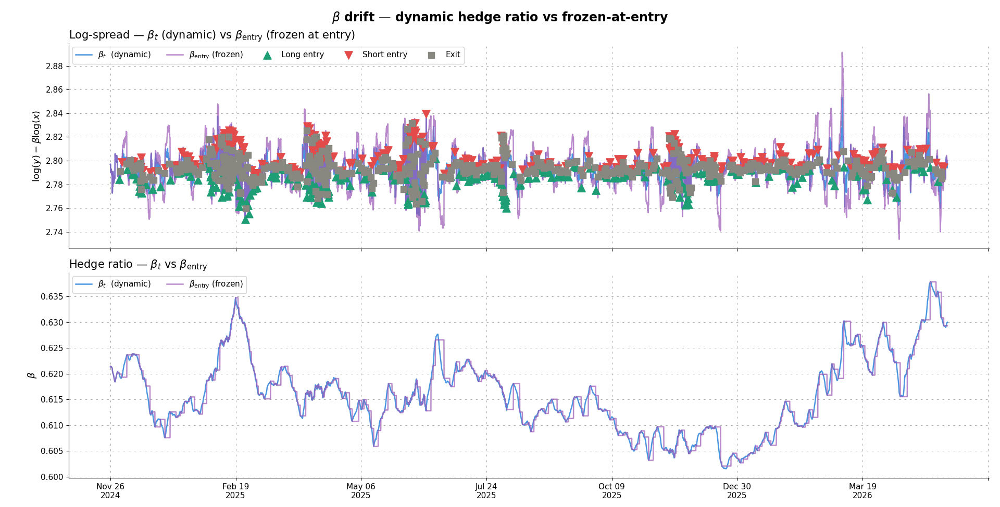

spreadpy: A pairs trading framework for systematic strategies#
spreadpy
Pairs trading, from spread to backtest
spreadpy provides a complete pipeline for pairs trading:
- Pair research — cointegration tests, ADF, half-life, Hurst exponent
- Spread construction, OLS, rolling OLS, Kalman filter
- Signal generation, z-score, copula
- Position sizing, notional, inverse-vol, Kelly criterion
- Walk-forward backtesting, slippage & commission costs, risk metrics

Key features#
An intuitive and modular Python library for systematic pairs trading. Please, contact me if you have any suggestions!
The spreadpy Python package implements a complete pairs trading pipeline,
from universe scanning to walk-forward backtesting.
Covered topics by the spreadpy package:
Pair research — scan a universe of assets and rank cointegrated pairs (Engle-Granger, ADF, half-life, Hurst exponent).
Spread construction — estimate time-varying hedge ratios $beta_t$: constant OLS, rolling OLS, 2-state and 3-state Kalman filters.
Signal generation — z-score entry/exit rules and copula-based conditional CDF signals (Gaussian, Clayton, Gumbel).
Position sizing — notional-based (linear z-score ramp), inverse-volatility (Markowitz), and Kelly criterion (truncated normal, three variants).
Backtesting — walk-forward engine with train / validation / test split, transaction costs (slippage + commission), and a full risk metric suite (Sharpe, Sortino, Calmar, CDaR, …).
Contents: